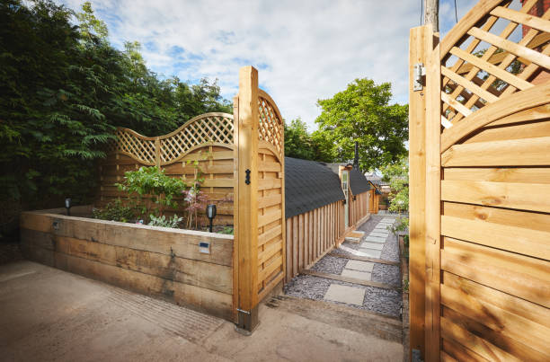

Jonesboro Georgia
info@superiorfenceandrail.pro
Jonesboro Georgia
info@superiorfenceandrail.pro

Secure your home or business in Jonesboro Georgia with top-quality fencing. We specialize in wood, vinyl, chain-link, and more. Trust our experienced team for reliable, long-lasting fence installations.
Click Here To Call Us (877) 848-1711Are you searching for reliable fence services in Jonesboro Georgia ? Our company specializes in delivering professional fence installation and repair services tailored to meet your specific needs. Whether you want to enhance privacy, improve security, or add aesthetic appeal to your property, we have the expertise to deliver exceptional results.
We offer a wide range of fencing solutions, including wood, vinyl, chain-link, aluminum, and wrought iron fences. Each type of fence is designed to serve unique purposes, from durable chain-link fences for security to elegant vinyl or wood fences for a polished, classic look. Our team uses premium materials and cutting-edge techniques to ensure your fence stands strong against time and weather conditions in Jonesboro Georgia .
What sets us apart? Our commitment to customer satisfaction and quality craftsmanship. We pride ourselves on offering competitive pricing, timely project completion, and personalized service to ensure your expectations are exceeded. From backyard fences for homes to large-scale commercial projects, no job is too big or small for us.
Protect your property and boost its curb appeal with a sturdy, well-crafted fence. Contact us today for a free consultation and quote! Let us be your trusted fencing partner in Jonesboro Georgia .
Residential & commercial Fences
Quality services at affordable prices
Immediate 24/ 7 emergency services


Looking for top-quality fence installation services in Jonesboro Georgia ? Our expert team is here to help you transform your property with durable, stylish, and secure fencing solutions. Whether you need a wooden privacy fence, a sleek vinyl option, or a sturdy chain-link barrier, we specialize in installing fences that meet your specific needs and enhance the beauty of your property.
With years of experience, we pride ourselves on delivering professional and reliable services. We use premium materials that ensure long-lasting durability and withstand harsh weather conditions. From residential fencing to commercial and industrial installations, our skilled professionals provide customized designs and precise craftsmanship to fit your requirements.
Why choose us for your fence installation in Jonesboro Georgia ? We offer competitive pricing, timely project completion, and exceptional customer service. Our experts guide you through every step, from selecting the right fence style to final installation, ensuring a hassle-free experience.
A professionally installed fence not only improves your property's aesthetics but also adds privacy, security, and value. Whether you want to keep pets safe, protect your family, or enhance your business premises, our fences are built to perform.
Contact us today for the best fence installation services in Jonesboro Georgia . Let us bring your fencing vision to life!
Residential & commercial Fences
Quality services at affordable prices
Immediate 24/ 7 emergency services
For a high level of security that is both effective and flexible, electric fencing is an excellent option. Our electric fencing installation services in Jonesboro Georgia provide a solution that deters intruders while being easy to manage. Whether for residential use, commercial properties, or farmland, electric fencing can be customized to fit your needs. Our team is knowledgeable about local regulations and safety measures, ensuring that your system is compliant and effective. Choose us for our commitment to superior technology and quality service that enhances your property’s security.

If you’re looking for a stylish, sustainable way to enhance your outdoor space, consider bamboo fencing. At Fences, we offer professional bamboo fence installation that brings a unique flair and natural beauty to your property. Bamboo is not only aesthetically pleasing, it is also incredibly strong and durable, making it an excellent choice for privacy and security.
Our bamboo fencing can be customized to various heights and styles, providing the perfect blend of functionality and design. Additionally, bamboo is an eco-friendly material, aligning with sustainable landscaping practices. Our trained team handles every phase of the installation with care, ensuring a high level of service and quality craftsmanship. Choose Fences for bamboo fence installation in Jonesboro Georgia and transform your outdoor space with our elegant fencing solutions.

Wrought iron fencing is a classic choice, offering both elegance and security. Over time, however, wrought iron can suffer from rust, damage, and wear, making restoration essential. At Fences, we specialize in wrought iron fence restoration and installation bringing beauty and strength back to your fencing.
Our wrought iron fencing options come in various designs, providing the right blend of security and aesthetic appeal. When restoring wrought iron fences, we carefully assess the damage, performing tasks such as rust removal, repainting, and structural repairs to ensure your fence looks its best and remains structurally sound.
Expert installation is critical for wrought iron fences, and our seasoned professionals utilize best practices to guarantee a beautiful and durable result. With a keen eye for detail and a commitment to quality, we ensure that your new or restored wrought iron fence enhances your property.
What differentiates Fences is our exceptional customer service and craftsmanship. We value open communication, allowing us to understand your specific needs and deliver a final product that aligns with your vision. Our transparent pricing means you’ll never have any surprises when it comes to cost.
Trust Fences for all your wrought iron fence restoration and installation needs . Whether you’re looking to restore a loved heirloom or install a new fence that combines beauty and security, we are here to help.

Every property has unique needs and aesthetics that require personalized solutions. Our custom fence design and build services cater to properties looking for specific styles and functionalities. Whether you want a decorative fence that enhances curb appeal or a robust privacy solution, our experienced team works closely with you to create a design that meets your vision. We draw on a diverse range of materials and styles, ensuring that your custom fence is as functional as it is beautiful. Choose us for our personalized approach and commitment to quality in custom fencing solutions.

Keeping your livestock safe and secure is a top priority for any farm or ranch owner. At Fences, we specialize in horse and livestock fencing solutions designed to protect your animals and your investment.
Our fencing options include various materials and styles, such as wooden, wire, and composite fencing, tailored to suit the specific requirements of your livestock. We understand the need for durable and reliable fencing that withstands the rigors of a farm environment.
Our experienced team works closely with you to determine the best fencing solution to meet your safety needs while aligning with your property's aesthetics. We pride ourselves on our reputation for quality workmanship and customer satisfaction.
Choose Fences for all your horse and livestock fencing needs . Join others who have trusted us to provide effective and safe solutions for their properties. Your farm animals deserve the best protection available.
Enhance your garden’s appeal and protect valued plants with our garden and landscape fencing services in Jonesboro Georgia . Our decorative solutions not only provide a visual barrier but also keep animals and pests at bay. Available in a variety of styles, including picket, lattice, and more, our fencing options cater to different aesthetics and functional needs. Our experienced team guides you through the selection and installation process, ensuring your garden is beautifully framed and secure. Choose us for our commitment to quality craftsmanship and durability in landscape fencing solutions.

Living in a noisy environment can be a challenge, and having a noise reduction fence can help create a more tranquil outdoor space. At Fences, we provide specialized noise reduction fencing solutions designed to shield your property from external sounds.
Our noise-reducing fences are crafted using materials optimized for sound attenuation, ensuring they effectively buffer noise from roads, neighbors, or other disturbances. We understand the importance of a peaceful living environment, and our team is dedicated to providing solutions that enhance your quality of life.
We work with you to design a fence that not only reduces noise but also complements your property’s aesthetic. Our professional installation ensures your noise reduction fence serves its purpose effectively, providing relief from unwanted sounds.
Choose Fences for noise reduction fencing . Join countless happy residents who have transformed their homes into peaceful retreats with our innovative fencing solutions. Let us help you regain your serenity.

For an elegant yet durable fencing option, ornamental steel fencing is the perfect solution for enhancing your property’s perimeter. At Fences, we specialize in ornamental steel fencing installation that combines beauty with strength.
Our ornamental steel fences come in a variety of designs, allowing you to create a fence that matches your property style while offering the security you need. The durability of steel ensures that your investment will withstand the test of time, requiring minimal maintenance over the years.
Our expert installation team is dedicated to delivering quality craftsmanship that exceeds industry standards. We work with each client to ensure that their unique design vision and practical needs are met.
Choosing Fences for ornamental steel fencing in Jonesboro Georgia ensures that you receive a top-notch product and service. Join the many satisfied customers who have enhanced their properties with our beautiful ornamental steel solutions backed by a commitment to quality.

For those seeking a strong and enduring barrier, stone and concrete fencing offers unrivaled durability and aesthetic appeal. At Fences, we specialize in the design and installation of stone and concrete fences that not only secure your property but also enhance its overall appearance. These materials provide an exceptional option for homeowners and businesses looking for long-lasting solutions.
Our skilled team will work with you to create a custom design that reflects your style and addresses your property’s unique layout. We tailor the materials, colors, and textures to ensure that your stone or concrete fence complements the landscape beautifully. Choose Fences for stone and concrete fencing needs in Jonesboro Georgia and invest in a lasting solution that combines security with beauty.
Years Experience
Expert Technicians
Satisfied Clients
Compleate Projects
When it comes to installing high-quality fences in Jonesboro Georgia Superior Fence is your go-to provider for reliable, durable, and aesthetically pleasing solutions. We understand that your property deserves the best, and that's why we offer a wide range of fence options tailored to suit your specific needs. From privacy fences to decorative options, we ensure every installation enhances the beauty and security of your property.
Our team at Superior Fence is committed to providing exceptional service, with years of expertise in the fencing industry. We use only the highest quality materials, ensuring that your fence not only looks great but lasts for years to come. Whether you're looking to secure your backyard, increase privacy, or improve your property's curb appeal, we offer expert guidance and top-notch craftsmanship.
What sets us apart in Jonesboro Georgia is our attention to detail and personalized approach. We work closely with each client to understand their vision and provide customized fencing solutions that fit their style and budget. Additionally, our transparent pricing and punctual service ensure you’re getting the best value for your investment.
With a reputation for excellence and a commitment to customer satisfaction, Superior Fence is the trusted name in fencing across Jonesboro Georgia . Let us help you create a secure, beautiful environment for your home or business. Choose Superior Fence—where quality meets reliability.
In today's world, ensuring your privacy and safety is paramount. A privacy fence serves as a barrier, providing you with the secluded space you desire while also enhancing your property’s aesthetic appeal. At Fences, we specialize in delivering exceptional privacy fence installation services tailored to your needs. Our team of experienced professionals uses high-quality materials that ensure durability and longevity. We understand the various constraints and considerations, from local regulations to neighborhood aesthetics, meaning your fence will perfectly align with your home’s character and your personal preferences.
Our commitment to excellence is reflected in our meticulous installation process. We begin with a detailed consultation to understand your needs, followed by precise measurements and planning. Whether you prefer wood, vinyl, or another material, we guarantee a beautiful finish that not only creates a private sanctuary but also boosts your property’s value. When you choose Fences for your privacy fencing needs you can rest assured knowing that you are getting the best service, workmanship, and support in the industry.
Wooden fences have an exquisite charm that can enhance the curb appeal of any residential or commercial property. However, like any outdoor structure, wooden fences can succumb to the elements, leading to deterioration over time. At Fences, we provide expert wooden fence repair and installation services tailored to meet the diverse needs of our Jonesboro Georgia clientele.
Our team of seasoned professionals understands the nuances of wooden fence installation. We work efficiently to ensure your new fence not only looks stunning but also stands the test of time. We offer a wide variety of styles and finishes, allowing you to customize your fence to fit your specific tastes and surrounding landscape.
In the event of damage, our wooden fence repair services will restore your fence's integrity and beauty. Whether it’s fixing damaged boards, replacing posts, or addressing rot and insect infestations, we apply effective techniques to bring your fence back to life. We use high-quality materials and provide solutions that not only resolve immediate issues but also prevent future problems.
Why choose Fences for your wooden fence needs Our commitment to excellence and customer satisfaction is unmatched. We recognize that each project is unique, and we approach every job with personalized attention. Our transparent pricing model ensures no hidden fees, giving you peace of mind.
Don't let a damaged fence detract from your property. Our dedicated team will help you choose the right wood type and design that aligns with your budget and vision. With our experience and dedication to quality workmanship, we guarantee that your wooden fence will be a stunning addition to your property. Choose us for professional, reliable wooden fence repair and installation services —your satisfaction is our priority.
If you're looking for a low-maintenance, durable, and aesthetically pleasing fencing option, vinyl fencing is a perfect choice. At Fences, we specialize in vinyl fencing installation that provides a clean, modern look while standing up to the rigors of the weather.
Vinyl fences are resistant to warping, cracking, and fading, making them an ideal long-term investment for your property. Our team is well-versed in the latest vinyl fencing technologies and designs to deliver a product that fits your specific style preferences and functional requirements.
In addition to installation, we also provide vinyl fence repair and maintenance services to keep your investment looking as good as new. By choosing our comprehensive services, you can enjoy the peace of mind that comes with knowing your fence is in expert hands.
Our commitment to quality, professionalism, and superior customer service makes us the best choice for vinyl fencing . We take pride in turning your fencing visions into reality while delivering a hassle-free experience from start to finish.
For an economical and practical fencing solution, chain-link fences are a popular choice for both residential and commercial properties . At Fences, we specialize in professional chain-link fence installation, offering robust security without compromising on visibility. Our chain-link fences are perfect for enclosing yards, securing business properties, and defining boundaries.
We use high-quality galvanized steel to ensure your fence is resilient and resistant to rust and corrosion. Understanding that each property has unique needs, we provide customizable options such as height, gauge, and coatings, allowing you to select the perfect fencing style for your requirements. Our installation process is thorough, ensuring that your fence is built according to industry standards while minimizing disruption to your property. Rely on Fences for your chain-link fencing needs and experience the quality and care that set us apart from the competition.
Aluminum fencing combines beauty and strength, making it an excellent choice for homeowners and businesses looking to enhance their property's aesthetics while ensuring security. At Fences, we offer decorative aluminum fencing services tailored to meet your unique needs within Jonesboro Georgia .
Our decorative aluminum fences are available in a variety of styles and finishes, allowing you to create a stunning visual impact that complements the design of your property. Lightweight yet exceptionally durable, aluminum fences are resistant to rust and corrosion, making them ideal for various climates. This means less maintenance for you and a longer life for your investment.
We understand that the fence you choose is not just about security; it’s also about enhancing your property’s value and beauty. Our skilled team will work closely with you to design and install a decorative aluminum fence that meets your specifications while providing all the necessary security features. From pool enclosures to garden borders, aluminum fencing can be adapted to suit numerous applications.
Why should you choose Fences for your decorative aluminum fencing project? Our commitment to customer satisfaction, quality materials, and expert craftsmanship sets us apart from the competition. We prioritize your needs and will guide you through the entire process, ensuring a hassle-free experience from start to finish.
Our professional installation team adheres to best practices and industry standards, guaranteeing that your aluminum fence is expertly installed for optimum performance. With years of experience working we have the knowledge and skills to handle any challenges that arise during installation and to ensure that your fence looks stunning and functions perfectly.
If you’re looking for an elegant, long-lasting fencing solution to enhance your property, look no further than decorative aluminum fencing by Fences. We are dedicated to delivering results that exceed your expectations and enhance the beauty and security of your home or business.
The quintessential symbol of home and warmth, picket fences are a beloved choice for many homeowners . At Fences, we specialize in picket fence installation that beautifully frames your property while providing the charm it deserves. Whether you are looking for classic white pickets or more modern designs and finishes, our team can bring your vision to life.
Picket fences are perfect for delineating your yard while maintaining an open feel. They enhance curb appeal and serve as functional barriers for pets and children. Using only the highest quality materials, we ensure that your picket fence is not only attractive but also durable and long-lasting. Our installation process is efficient and careful, respecting your space while delivering exceptional results. When you choose Fences for picket fence installation you’re choosing a team committed to quality and customer satisfaction.
Split rail fencing is a timeless choice for property owners seeking a rustic charm coupled with functionality. At Fences, we specialize in residential split rail fencing installation providing a perfect blend of traditional aesthetics and modern durability.
This type of fencing is particularly popular for its minimalist design, which allows you to define property boundaries attractive without obstructing views. Ideal for ranch-style homes, country settings, or even urban gardens, split rail fencing enhances the natural beauty of your landscape while offering visibility and accessibility.
Our split rail fences are constructed using high-quality wood, ensuring that your fence will withstand the elements while maintaining its attractive appearance. Properly installed split rail fencing can last for years, making it a cost-effective option for homeowners seeking a blend of beauty and practicality.
When you choose Fences for your split rail fence installation, you are partnering with experienced professionals who are dedicated to quality and customer satisfaction. Our team will guide you through the entire process, from selecting the best materials to scheduling installation at your convenience. We understand that every property is unique; therefore, we offer customizable options that cater to your specific needs and preferences.
Whether you’re enclosing a garden, highlighting a pathway, or creating a boundary for livestock, our split rail fencing solutions are versatile and attractive. Our attention to detail and craftsmanship translate into a durable product that stands the test of time.
Transform your outdoor space with the charm and practicality of split rail fencing by Fences. Contact us today to discuss your vision, and let’s create a stunning and functional fencing solution that enhances your property .
Protecting your fence against the elements is crucial for maintaining its beauty and functionality over time. At Fences, we offer professional fence staining and maintenance services designed to extend the life of your fencing investment.
Our expert team understands the importance of proper maintenance and can recommend the best products suitable for your specific fence type. Regular staining not only enhances the fence’s appearance but also helps to protect it from damage caused by UV rays, moisture, and pests.
We pride ourselves on our attention to detail and quality service. Our maintenance plans are customizable to fit your needs, ensuring that your fence remains in pristine condition year-round. Choosing us means you’ll receive reliable support and expert advice to keep your fences looking their best.
Join our customers who trust Fences for all their fence maintenance needs. We ensure your property’s boundaries remain attractive and functional, providing you peace of mind and a welcoming environment.
Safety is paramount when it comes to pools, especially for families with children and pets. Our pool safety fence installation services focus on providing security without sacrificing style or aesthetics. We offer various materials and designs that comply with local safety regulations, ensuring that your pool area remains secure. Our fences create a clear barrier, giving you peace of mind while allowing you to enjoy your outdoor space. Our expert team ensures proper installation and placement, ensuring maximum safety for your loved ones. Choose us for our unwavering commitment to quality and safety in pool fencing solutions.
Securing your pets is as important as protecting your home. At Fences, we offer specialized pet containment fencing that ensures your furry family members can play and explore safely within your yard. Our pet fences are designed to keep pets securely contained while allowing them to enjoy the great outdoors without worry.
We provide a range of options, from traditional wood and vinyl fences to innovative invisible fencing solutions, tailored to meet your specific needs and the nature of your pets. Our expert installation team ensures that the fencing is properly positioned and secured, taking into account your pet's size and behavior. Keeping your pets safe is our priority, and our commitment to quality and customer satisfaction makes Fences the go-to choice for pet containment fencing .
In today’s ever-evolving world, protecting your business is of utmost importance. At Fences, we specialize in security fencing solutions that provide an effective barrier against theft and vandalism. Security fencing is an investment that not only safeguards your property but also enhances your business’s reputation as a secure place.
We offer a diverse range of security fencing options, including high-security chain-link, barbed wire, and ornamental steel fences. Our experienced team will assess your property’s unique vulnerabilities and recommend the best solutions tailored to your needs. With a focus on quality materials and expert installation, you can trust us to deliver robust security fencing solutions designed to withstand attempted breaches. Choose Fences for your business’s security fencing needs and experience unparalleled protection and service.
For industrial properties, security and durability are paramount. At Fences, we offer expert industrial chain-link fence installation that provides a robust, secure solution for protecting your premises. Our heavy-duty chain-link fencing is ideal for warehouses, factories, and construction sites, combining functionality with cost-effectiveness.
Our team understands the unique needs of industrial properties and is equipped to handle any installation challenge. We use high-quality materials and provide professional installation that adheres to all industry standards. Additionally, we can customize the height and mesh size of the chain-link fence to meet your specific requirements. Trust Fences for your industrial chain-link fencing needs in Jonesboro Georgia and ensure your property is secured by the best in the business.
Keeping construction sites secure and safe is essential for both workers and the public. Our temporary fencing services offer effective and easily deployable solutions designed for construction and event management. Our fences are sturdy yet lightweight, making them easy to install and remove as needed. They provide clear boundaries, deter unauthorized access, and enhance safety on-site. With customizable options, we can cater to different project scales and durations, ensuring you get the perfect fit for your needs. Trust our team for efficient service and quality materials that ensure your construction site is well-protected.
For businesses seeking a balance between security and aesthetic appeal, commercial aluminum fencing is the ideal solution. It offers durability and elegance, making it suitable for various commercial applications, from retail spaces to office complexes. At Fences, we specialize in commercial aluminum fencing in Jonesboro Georgia providing top-quality solutions tailored to your specific needs.
Aluminum fencing is lightweight yet strong, making it an excellent choice for security without compromising visibility or style. Our commercial-grade aluminum fences are resistant to rust and corrosion, ensuring a long-lasting installation that requires minimal maintenance. Available in various heights, colors, and styles, we can customize your fencing to match the architecture of your business premises.
Our installation team is well-trained and experienced, ensuring that your commercial aluminum fence is installed correctly and efficiently. We adhere to all local regulations, guaranteeing that your fencing solution not only meets your security needs but also complies with necessary codes.
What sets Fences apart in Jonesboro Georgia is our unwavering commitment to customer satisfaction and quality workmanship. We understand that each business has unique requirements, which is why we take a personalized approach to every project. Our transparent pricing model ensures you are informed every step of the way, with no hidden costs.
By choosing our commercial aluminum fencing services, you are making a long-term investment in the security and appeal of your property. Enjoy the perfect blend of functionality and elegance with our high-quality aluminum fencing solutions at Fences.
Securing your property is more than just erecting barriers; it’s about controlling who enters. Our access control and gate systems are designed to meet a variety of security needs, incorporating advanced technology such as keypads, remote controls, and biometric scans. We provide comprehensive installation services that ensure seamless integration with your existing fencing. Our solutions enhance your security while allowing you to maintain easy access for authorized personnel. Trust our experienced team to design and install a system that fits your security needs and budget, making us the go-to choice for access control solutions in Jonesboro Georgia .
For those requiring high-security solutions, barbed wire fencing is an effective option. At Fences, we offer professional barbed wire fence installation that provides an additional layer of protection for your property. Often used in conjunction with chain-link fencing, barbed wire serves as a formidable deterrent against trespassers.
Our experienced team understands the best practices in barbed wire installation to ensure maximum effectiveness and compliance with local regulations. We assess your property’s unique needs and recommend the best layout for your fencing to ensure optimal security. When you choose Fences for barbed wire fence installation you are selecting a trusted partner committed to safeguarding your property.
Maintaining privacy while ensuring security is critical for many businesses. Commercial privacy fencing provides a specialized solution that creates a secluded environment while protecting your property. At Fences, we specialize in commercial privacy fencing installation in Jonesboro Georgia that aligns with your privacy and security needs.
Our commercial privacy fences come in various materials, including vinyl, wood, and composite, each offering durability and style. We work closely with you to understand your specific requirements, allowing us to create a solution that not only enhances privacy but also complements your business's aesthetics.
Installation quality is crucial for effective privacy fencing. Our seasoned professionals use industry best practices to ensure your fence is installed to the highest standards, providing a sturdy barrier that shields your property from prying eyes. We also consider local codes and regulations to guarantee compliance while achieving the desired privacy level.
What distinguishes Fences from competitors is our unwavering commitment to customer satisfaction and attention to detail. We pride ourselves on clear communication, ensuring you are informed throughout the process and receive exactly what you envision for your property.
Investing in commercial privacy fencing is an investment in your business's security and reputation. Our high-quality fencing solutions not only provide the privacy you need but also enhance your property's value and appeal. Choose Fences for reliable, professional privacy fencing installation in Jonesboro Georgia .
Security is a significant concern for both residential and commercial properties, and an anti-climb fence is an effective solution for safeguarding your premises. At Fences, we specialize in anti-climb fence installation that acts as a robust security barrier while offering peace of mind.
Our anti-climb fences are designed with specific features that prevent unauthorized access, including pointed tops and closely spaced pickets. We assess your security needs carefully and provide a tailored approach that fits with your landscape and architectural style. With our professional installation team, you can trust that your anti-climb fence will not only deter intruders but also enhance the overall look of your property. Choose Fences for anti-climb fencing and protect what matters most to you.
The security of industrial facilities is paramount, and at Fences, we offer specialized perimeter fencing solutions designed to secure your operations efficiently. Our perimeter fencing options include chain-link, barbed wire, and solid privacy fencing, ensuring your facility is well protected against unauthorized access.
Our experienced team works diligently to assess your facility's unique vulnerabilities and provide tailored fencing solutions that meet your specific requirements. We understand the importance of a durable and compliant fence for your operations. When you choose Fences for your perimeter fencing needs in Jonesboro Georgia you are partnering with a team dedicated to your security and operational success.
In any warehouse or storage unit operation, security is a top priority. At Fences, we specialize in providing robust fencing solutions that secure your valuable assets. Our team understands the unique challenges faced by warehouse operations and is committed to delivering reliable fencing that meets your specific needs.
We offer a variety of fencing options including chain-link, privacy fencing, and temporary fences that can be used for construction or seasonal projects. Our expert installation services ensure that your warehouse and storage units are secured against theft and unauthorized access with minimal disruption to your operations. Choose Fences for fencing solutions tailored for warehouses and storage units in Jonesboro Georgia —security that you can depend on.
As environmental awareness grows, the demand for eco-friendly fencing solutions is on the rise. At Fences, we offer innovative eco-friendly fencing options that not only protect your property but also contribute to sustainable practices.
Our eco-friendly options include sustainably sourced wooden materials, recycled materials, and biodegradable fencing solutions that minimize environmental impact. We are committed to helping our customers make greener choices without compromising on quality or aesthetics.
When you choose us, you are selecting a partner dedicated to responsible practices. We work with you to design and install eco-friendly fencing that enhances your landscape and promotes a healthier planet. From design to installation, our expert team will walk you through every step, ensuring the best results.
Join the movement toward sustainable living by choosing Fences's eco-friendly fencing solutions. Together, we can create beautiful, environmentally conscious spaces that protect your property and our planet.
Choosing the right fencing materials for Jonesboro Georgia 's unique climate is essential to ensure durability, functionality, and style. Whether you're enhancing your property's security, privacy, or curb appeal, high-quality fencing materials make all the difference. At Fences, we specialize in offering fencing solutions designed to withstand Jonesboro Georgia 's weather conditions, including intense sun, high humidity, and occasional heavy storms.
Durable and Weather-Resistant Materials
Our premium fencing options include vinyl, aluminum, and treated wood, which resist warping, cracking, and fading even under Jonesboro Georgia 's extreme heat. These materials not only maintain their appearance over time but also require minimal maintenance, saving you time and effort.
Stylish Options for Every Property
From sleek modern designs to traditional styles, we offer fencing options that complement any property. Choose from privacy fences, picket fences, and ornamental styles to suit your preferences. Our materials are available in various colors and finishes, ensuring a perfect match for your home or business.
Expert Installation and Customization
We understand that every property is unique. That’s why we provide tailored fencing solutions to meet your specific needs. Our skilled team handles everything from design consultation to installation, ensuring a seamless process and flawless results.
Invest in fencing materials built to endure Jonesboro Georgia 's climate while enhancing your property’s value and security. Contact us today to explore our high-quality options and get started on your fencing project!
Jonesboro is a city in and the county seat of Clayton County, Georgia, United States. The population was 4,724 as of the 2010 census.
The lifespan depends on the material used. Wood fences typically last 10-15 years, while vinyl and aluminum fences can last 20+ years in Jonesboro Georgia .
Absolutely! We provide a variety of colors and finishes to ensure your fence complements your Jonesboro Georgia property.
Yes, we use eco-friendly materials and processes to minimize the environmental impact of our fences in Jonesboro Georgia .
Depending on local regulations, you may need a permit to install a fence in Jonesboro Georgia . We can help you navigate the permitting process.
Absolutely! Our fences are made with high-quality materials designed to withstand the climate and weather conditions .
Yes, we have the expertise to install fences on uneven or sloped terrains in Jonesboro Georgia .
We offer a range of fence heights to meet your privacy and security needs typically from 4 to 8 feet.
Yes, our fences are designed to keep your pets safe and secure in your Jonesboro Georgia yard.
Yes, Superior Fence offers fence installation services for both residential and commercial properties in Jonesboro Georgia .
Yes, we offer flexible financing options to make your fence installation affordable .
Popular styles in Jonesboro Georgia include picket fences, privacy fences, and decorative aluminum fences.
We accept a variety of payment methods, including credit cards, checks, and financing options for projects .
Yes, Superior Fence is experienced in meeting HOA guidelines and can ensure your fence complies with regulations .
Absolutely! Contact Superior Fence to schedule a convenient consultation for your fencing project .
Yes, Superior Fence offers fence removal services as part of your installation project .
Yes, we design our fences with safety in mind to protect children in your Jonesboro Georgia property.
Yes, Superior Fence provides professional fence repair services to restore the functionality and appearance of your fence.
Yes, we provide warranties on materials and workmanship for all fences installed .
Maintenance varies by material. We provide guidance on cleaning, staining, and repairs to keep your fence in top shape in Jonesboro Georgia .
Superior Fence installs a wide variety of fences including wood, vinyl, chain-link, aluminum, and privacy fences tailored to your specific needs.
The timeline for fence installation depends on the type and size of the project, but most installations are completed within 1-3 days.
Fence installation costs vary based on material, size, and design. Contact Superior Fence for a competitive quote tailored to your Jonesboro Georgia project.
Yes, Superior Fence provides free, no-obligation quotes for all fence installation projects .
Yes, Superior Fence offers custom fence designs in Jonesboro Georgia to match your property’s style and requirements.
Yes, we offer staining and painting services to enhance the appearance and durability of your fence in Jonesboro Georgia .
Privacy fences offer seclusion, enhanced security, and noise reduction, making them an excellent choice for homes .
Our experts will help you choose the ideal fence based on your needs, preferences, and property style in Jonesboro Georgia .
Yes, Superior Fence specializes in installing pool fences that meet safety standards in Jonesboro Georgia .
Superior Fence is known for exceptional craftsmanship, high-quality materials, and outstanding customer service in Jonesboro Georgia .
Simply contact Superior Fence to schedule a consultation and begin your fencing project .
Superior Fence provided exceptional service in Jonesboro Georgia . From consultation to installation, they were professional and timely. The new fence is exactly what we wanted, and we couldn’t be happier!
Profession
Superior Fence in Jonesboro Georgia did an amazing job on our new fence. The team was professional, quick, and the results speak for themselves. Our fence is perfect, and we’re so happy with the work. Thank you for the great service!
Profession
Superior Fence delivered outstanding service in Jonesboro Georgia . From initial contact to final installation, their team was on top of everything. The fence is exactly what we wanted, and the entire process was smooth and hassle-free. Highly recommend them!
Profession
Jonesboro GA Fences Pros
(877) 848-1711
info@superiorfenceandrail.pro
09.00 AM - 09.00 PM
09.00 AM - 12.00 PM